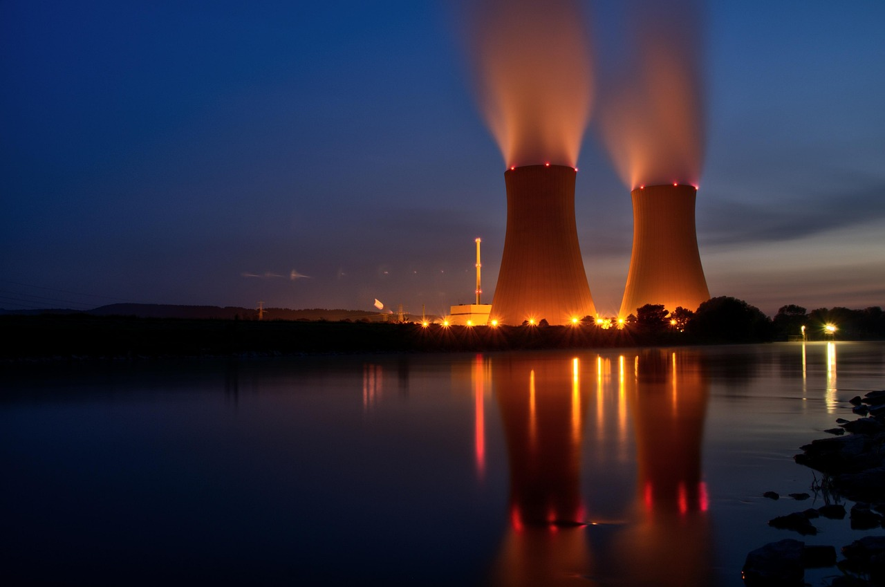
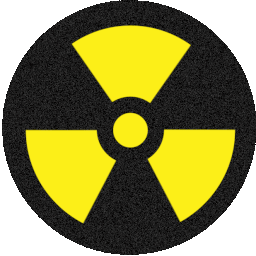

Halden, den lille grensebyen var en av få byer med atomreaktor til den ble stengt i 2018. Reaktoren genererte ikke strøm, men ga verdifulle data gjennom forskning på kjernekraftteknologi og materialer.
Halden kjernekraft har nå kjøpt tomt ved Femsjøen med planer om å bygge et moderne kjernekraftverk basert på SMR-teknologi – små modulære reaktorer som kan gi stabil, utslippsfri energi i mange tiår.

Vi trenger mer strøm
I 2021 brukte Oslo, Akershus og Østfold til sammen 24 TWh med strøm. Etterspørselen vil øke dramatisk med elektrifisering av transport og industri.
Google skal etablere datasenter i Skien, som krever enorme mengder energi for å lagre og behandle data.
“Hvis det ikke bygges mer kraft vil datasentre sluke all tilgjengelig kraft i området,” sier politiker Ådne Naper (SV).

SMR og sikkerhet
Kan man egentlig stole på en reaktor med tanke på Tsjernobyl, Three Mile Island og Fukushima? Dagens SMR-reaktorer er konstruert med helt andre sikkerhetsstandarder.
SMR-anlegg produseres i fabrikk, fraktes som moduler og installeres raskt. De har passive sikkerhetssystemer som automatisk stanser reaktoren uten behov for strøm eller menneskelig inngripen.
Miljømessig gir SMR mindre avfall, høyere effektivitet og langt lavere utslipp enn fossile alternativer.

FNs bærekraftmål
Kjernekraft støtter flere av FNs bærekraftmål ved å levere stabil, ren energi og bidra til økonomisk vekst og teknologisk utvikling.

Tilgang til bærekraftig energi for alle.

Fremme økonomisk vekst og anstendig arbeid.

Bygge robust infrastruktur og innovasjon.

Bekjempe klimaendringer og konsekvenser.

Bevare økosystemer og biologisk mangfold.